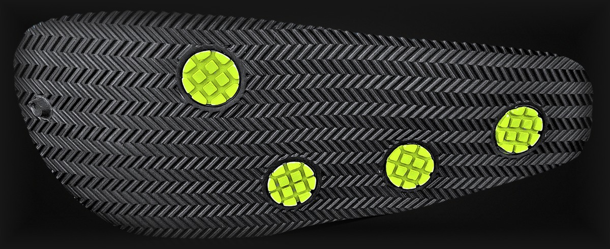

EVA와 실리콘을 배합한 자체 소재 E-실리폴리렌으로 안창까지 하나로 만든 워킹화입니다. 발목 입구 테두리를 도톰하게 두르고, 쿼드그립 4점 패드와 헤링본 트레드를 더했습니다. 물을 많이 쓰는 주방 현장의 목소리를 듣고 설계했습니다.
Moulded in one piece, footbed included, from E-Silipolyrene, our own EVA–silicone blend. A thick collar rim, Quad Grip 4-point pads and a herringbone tread — designed by listening to people who work in wet kitchens.
추천 · For
조리·서비스·매장 등 서서 일하는 분 People who work on their feet
하루 종일 걷는 분 People who walk all day

밑창 그립 패드 · 양산 컬러(라임)
KEY FEATURES핵심 기능
쿼드그립 4점 패드Quad Grip 4-point pads
밑창에 원형 그립 패드 4개를 배치했습니다. Four round grip pads are placed on the outsole.
깔창 없는 일체형 안창One-piece footbed
EVA·실리콘 배합 자체 소재 E-실리폴리렌으로 안창까지 하나로 만들어, 깔창을 따로 넣지 않습니다. Moulded in one piece from E-Silipolyrene, our own EVA–silicone blend — no separate insole needed.
도톰한 발목 테두리Thick collar rim
발목이 들어가는 입구 테두리를 다른 부분보다 두껍게 둘렀습니다. The rim around the opening is made thicker than the rest of the shoe.
폐타이어·폐벽지 새활용 패드Upcycled grip pads
그립 패드에 폐타이어 고무와 실크벽지 재생 PVC를 배합했습니다. Grip pads blend waste-tire rubber with PVC recovered from silk wallpaper.
BRAND STORY브랜드 스토리
폐타이어 고무, 실크벽지 자투리, 목공소 우드칩 — 버려지던 자원을 새활용해 신발로 만드는 브랜드, 라라슈(RhaRa Shoe)입니다.
하루 종일 서서 일하는 사람들의 걸음 곁에서, 버려진 것이 다시 걷는 길이 되도록 만듭니다.
RhaRa Shoe makes footwear by upcycling discarded resources: waste-tire rubber, silk-wallpaper offcuts and wood chips.
For people on their feet all day, we turn what was discarded into a path to walk again.